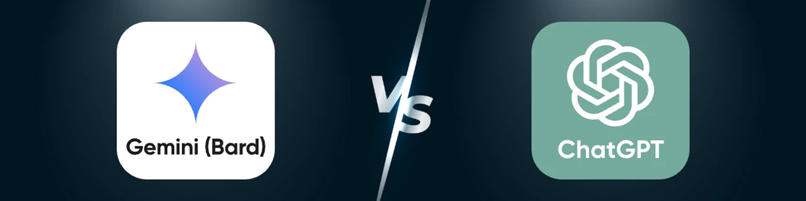
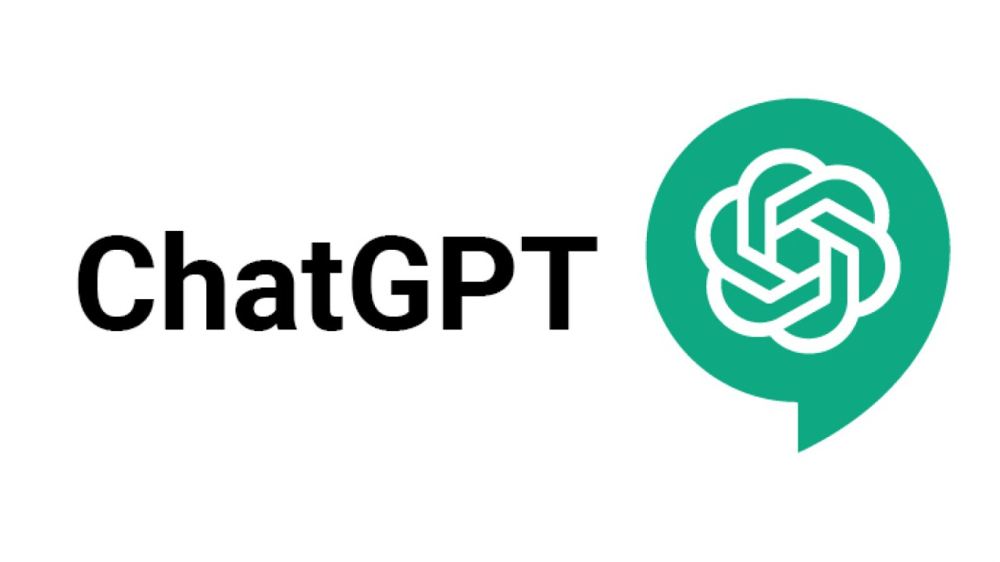
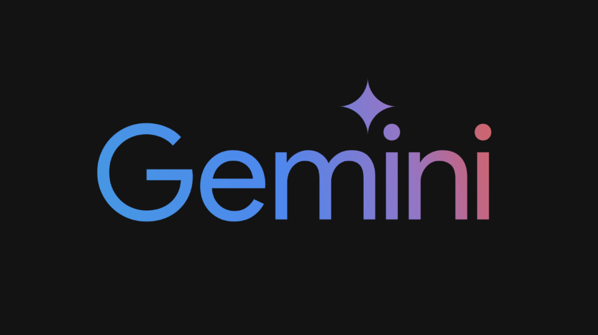

Gemini (Bard) 與 ChatGPT：2025 年你應該選擇哪一個？
說到強大的人工智能聊天機器人，很難不提及其中兩個頂級玩家：OpenAI 的 ChatGPT 和谷歌的 Gemini（舊名：Bard）。到 2025 年，人工智能聊天機器人將成為學生、工作者和普通用戶不可或缺的一部分。智能助手已經改變了人們使用科技進行研究、寫作、解決問題和共享信息的方式。
關於人工智能孰優孰劣的爭論似乎已成為科技論壇和社交網絡上的熱門話題，這已不是什麼秘密。一些用戶對 ChatGPT 的創造力和逼真的對話流程充滿熱情，而另一些用戶則欣賞 Gemini 的實時信息訪問以及與谷歌服務的集成。
本文將力求提供迄今為止對這兩種AI系統最全面的比較。
什麼是 ChatGPT？
ChatGPT 擅長閱讀和創作類似人類的文本，涵蓋各種主題和任務。它能夠撰寫精彩文章、創作詩歌、提出創意想法、解答難題、解決編碼問題，並進行令人驚奇地像人類一樣的良好對話。
該人工智能的優勢在於它基於來自互聯網、書籍和其他來源的海量文本語料庫進行深度預訓練，即使沒有實時互聯網連接，也能提供強大的生成能力。雖然它的知識有一個截止日期（由 OpenAI 定期更新），但其推理能力和創造潛力使其在內容創作者、程序員、教師和商業專業人士中廣受歡迎。
什麼是 Google Gemini？
Google Gemini 是 Google 應對 AI 聊天機器人革命的舉措。Gemini 依托 Google 數十年的搜索和 AI 經驗，能夠直接與 Google 搜索連接，提供實時信息以及許多其他 AI 系統所缺乏的最新答案，從而脫穎而出。
Gemini 將強大的語言模型潛力與 Google 的海量信息庫相結合，使其能夠訪問和壓縮最新信息、輔助研究、創建內容，並協助完成眾多創意和分析任務。它與 Google 的眾多產品（例如 Gmail、文檔、雲端硬盤和日曆）的連接，為已經加入 Google 生態系統的用戶帶來輕鬆便捷的體驗。
Gemini最初作為一項實驗性人工智能推出，到 2025 年已經取得了長足的發展。現在，它具有更強的推理能力、對多種語言的支持以及更佳的創造能力，同時保留了實時獲取最新信息的主要優勢。
比較表：ChatGPT 與 Gemini
| 特徵 | ChatGPT | Gemini |
|---|---|---|
| 數據源 | 在大量數據集上進行預訓練 | 實時訪問 Google 搜索 |
| 創造力 | 擅長講故事和寫作 | 適合事實、最新的回復 |
| 會話能力 | 自然而迷人 | 事實驅動，信息豐富 |
| 無障礙設施 | 提供免費和付費版本 | 集成 Google 的免費版本 |
| 最適合 | 內容創作、編碼、頭腦風暴 | 事實核查、研究、總結 |
ChatGPT
優點：
- 出色的創意寫作技巧（故事、博客、電子郵件）
- 更自然、更人性化的對話流程
- 離線功能完美（付費版本）
- 解決棘手問題的高級推理能力
- 非常好的編碼支持和調試功能
缺點：
- 沒有實時搜索功能
- 截至培訓截止日期的知識
- 免費版本有使用限制和等待時間
- 高級訂閱費（GPT-4.5 每月 20 美元）
- 與生產力軟件的直接集成有限
谷歌Gemini
優點：
- 獲取實時、最新信息
- 更適合事實核查和研究摘要
- 免費，與 Google Workspace 完全集成
- 更好地處理時事和最新發展
- 使用 Google 文檔、表格和 Gmail 實現流暢的工作流程
缺點：
- 創意寫作和講故事能力較弱
- 答案有時顯得比較機械
- 對互聯網連接的依賴程度更高
- 谷歌數據實踐導致的隱私問題
- 不太適合複雜的編碼任務
哪款 AI 聊天機器人適合你？
1. 核心優勢：創造力 vs. 研究能力
ChatGPT 在富有想像力的場景中表現出色。從撰寫營銷材料到創建故事情節或內容計劃，它總能創作出引人入勝的原創素材。經過訓練，ChatGPT 能夠生成聽起來自然、吸引人類讀者的文本。最近的用戶調查顯示，72% 的專家對 ChatGPT 在創意任務（尤其是內容開發和故事敘述）方面的評分較高。
相比之下，Gemini 則鞏固了其在研究部門的主導地位。由於它與谷歌搜索引擎相連，這意味著它可以直接、即時地訪問數據。
2. 用戶體驗：類人響應 vs. 分析響應
ChatGPT 提供的對話互動幾乎與與一位經驗豐富的人類同事聊天毫無二致。自然的語言響應，加上恰到好處的幽默感和語境識別，讓擁有 AI 工具使用經驗的用戶在與 ChatGPT 的互動中感到舒適自在。即使缺乏技術能力的用戶，也會因為 ChatGPT 的用戶友好性而對其信賴有加。
Gemini的人更傾向於正式、基於事實的風格。雖然他們仍然健談，但他們的回答往往更注重正確性和完整性，而非個性。這種分析傾向使他們尤其適合回答專業和技術問題，因為這類問題更看重準確性而非個性。
3. 準確性和數據訪問：實時信息與穩定數據集
通過與 Google Search Gemini 的連接，該工具展現了獲取及時信息的優勢。Google Search 與 Gemini 的結合使該工具能夠處理時效性強的資料，而 ChatGPT 的處理能力遠超其知識上限。實時功能為商業智能和當代事件分析提供了卓越的價值。
儘管受到訓練截止時間的限制，ChatGPT 的數據庫往往能夠提供更經過全面測試且更可靠的信息。由於它不會從開放網絡動態獲取信息，因此不太可能添加來自未經驗證來源的錯誤信息。用戶報告稱，ChatGPT 的回復在成熟主題上通常更準確，但更新性較低。
4. 整合與生態系統：谷歌 vs. OpenAI
Gemini 與 Google 廣泛的生產力應用生態系統無縫協作。用戶與 Gemini 對話時，可以在 Gmail 中撰寫電子郵件、在表格中解析數據、在文檔中匯總文檔或查看日曆的空閒時間——所有這些都無需離開對話即可完成。這種緊密的集成為 Google 的忠實用戶帶來了強大的工作流程效率。
ChatGPT 依賴於 OpenAI 不斷擴展的生態系統和第三方插件。儘管自 2022 年以來，其集成功能已大幅擴展，但它仍無法像谷歌通過 Gemini 那樣與生產力軟件進行深度原生集成。
5. 定價模式：免費訪問 vs. 付費高級功能
Gemini 的模型在 2025 年初之前的幾年內都是完全免費的。這使得學生、偶爾使用的人或仍在試驗且不想在其上花費太多錢的公司可以方便地使用它。
ChatGPT 採用免費增值商業模式，提供功能齊全但受限的免費套餐，以及每月 20 美元的訂閱服務，可額外使用 GPT-4.5 的功能、更快的處理速度、高峰需求時的優先響應以及更大的使用容量。雖然這會給少數用戶帶來一些費用障礙，但大多數專業人士都會在日常工作中使用付費服務，因此值得一試。
6. 隱私和道德因素：你信任誰？
Gemini 受益於 Google 的安全性，但對於優先考慮隱私的人來說可能會是一個問題，因為 Google 服務會收集數據用於廣告目的。
ChatGPT 因其在數據使用方面的開放性而贏得了聲譽，並增加了更明確的數據存儲退出選項。然而，這兩項服務最終都要求用戶將敏感信息留在大公司手中，這一點讓一些潛在的用戶感到擔憂。
如果你不是機構，而是獨立學習者或學習組織，使用 ChatGPT Plus 或其他應用程序可能會花費你不少錢。準備好加入共享訂閱小組吧，這樣你就有機會以更低的價格使用這些服務！立即購買ChatGPT 共享訂閱，節省更多！此外，你還可以選擇環球巴士，它結合了 GPT 和 DeepSeek 兩大 AI 功能，精準匹配你的 AI 搜索需求。